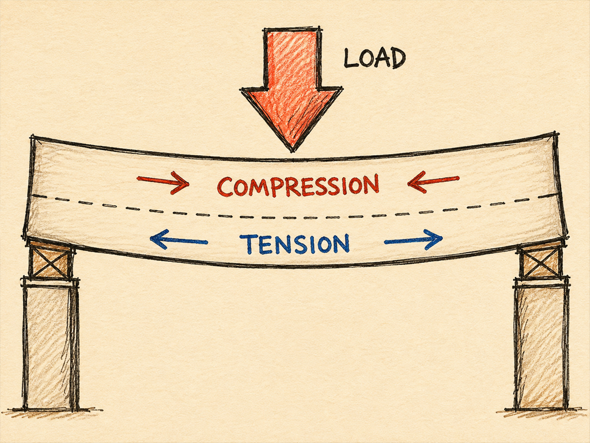
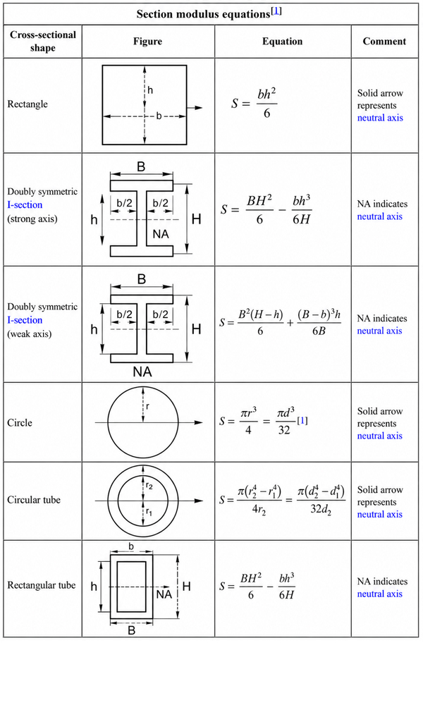
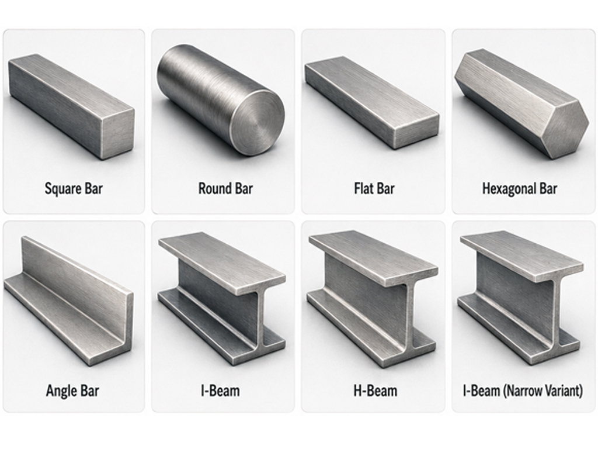
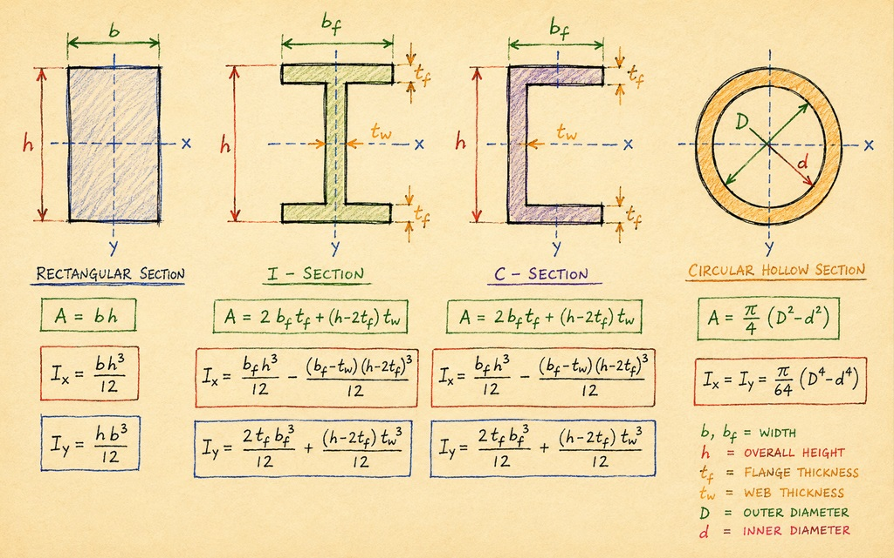
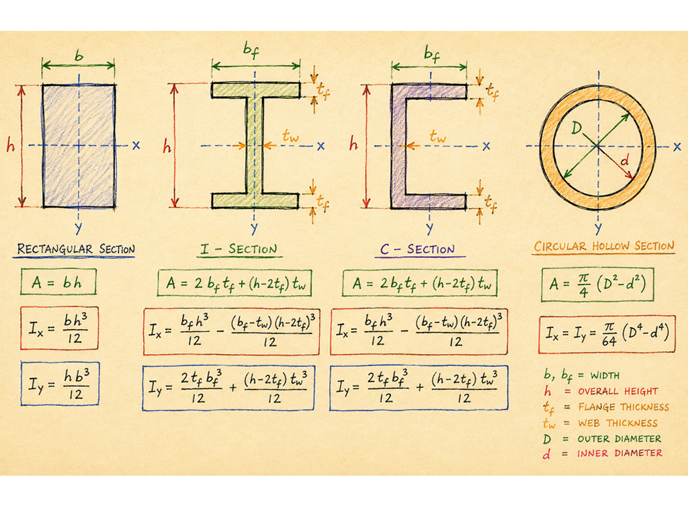

SECTION MODULUS
Section modulus is a measure of how strong a beam’s shape is when it bends.
It tells you how well a beam’s cross-section can resist bending. If you have two planks of wood, the deeper one will be harder to bend. The depth of the wood makes it harder to bend.
That difference in bending strength comes from the section modulus.


WHAT IT REALLY MEANS
Take a floor joist example, when a beam bends:
The top is being squeezed (compressed).
The bottom is being stretched (tension).
The middle (the neutral axis) stays the same length.
The further the material is from that middle line, the better it resists bending.
Shapes that put more material at the top and bottom (girders) are much stronger for their weight. This explains their shape.
WHAT IT MEASURES
The higher the section modulus, the more bending moment the cross section can carry before the extreme fibres reach the material’s allowable stress.
Two things are measures and combined into ONE number.
1
How the area of the cross-section is spread out
ONE NUMBER
2
How far the furthest point is from the middle (neutral axis).
A bigger section modulus means the beam can resist a bigger bending moment before the stresses become too high.
Bigger Z = stronger beam.
WHY IT MATTERS
If a beam has a higher section modulus, it:
bends less
can carry more load
is stronger in bending even if made from the same material
This is why deeper I beams (or cross section) are preferred. They have a higher section modulus.

Ruler (again)
Imagine holding a ruler:
Hold it flat and try to bend it = easy
Turn it on its side and try again = hard
The ruler hasn’t changed, but the depts of the ruler reacts differently to bending whether it is upright or on its side.

“Bigger Z = stronger beam.”
IN DEPTH?
Section modulus is one of the most important geometric properties used in structural engineering. It assesses the bending strength of a beam (or any member) subjected to flexural stresses (bending).
It provides a direct measure of how efficiently a given cross-section resists bending, it forms a core part of beam design.
It does not depend on the material itself (to be discussed later) only the shape and size of the section.
Section modulus is derived from the second moment of area (also known as the moment of inertia, I) which we discussed in the last section.
It is also derived from the distance from the centroid to the extreme fibre (y).


SECTION MODULUS
Section modulus = Moment of Inertia
Distance from centre to extreme fibre
Z = I / Y
It is a combination of the above two concepts.
Moment of inertia (I): (second moment area):
HOW the area is distributed around the neutral axis.
Distance to extreme fibre (y):
How the area is distributed about the neutral axis, y being the furthest point from that axis (where the maximum compressive or tensile stress occurs).
BENDING STRESS
Because bending stress is proportional to the distance from the neutral axis (and resistance increases with a larger moment of inertia) the section modulus combines both effects into a single parameter.
When a structural member is subjected to a bending moment (M), the maximum stress developed at the extreme fibre is:
Sigma = M / Z
This equation shows why section modulus is so valuable.

“The larger the value of Z, the lower the resulting bending stress.”
WHY SHAPED SECTIONS ARE EFFICIENT
This means that increasing the depth of a beam (or redistributing material further from the neutral axis) can dramatically improve strength without proportionally increasing weight.
This is why I-beams, channels and other shaped sections are more efficient than solid rectangles.
Their geometry pushes material toward the flanges where bending stresses are highest, generating a high section modulus while keeping the web relatively thin.
ELASTIC SECTION MODULUS
Elastic section modulus (Zₑ)
Used when the material is still behaving normally and returns to its original shape when the load is removed.
The stress across the section is linear (top in compression, bottom in tension).
Most everyday design uses this because structures are expected to stay in this safe, reversible range.
PLASTIC SECTION MODULUS
Plastic section modulus (Zₚ)
Used when the entire cross-section has fully yielded (pushed to its limit).
The stress is no longer linear, the whole section is working at maximum capacity.
This is used in plastic design to calculate the absolute maximum strength before structural collapse.